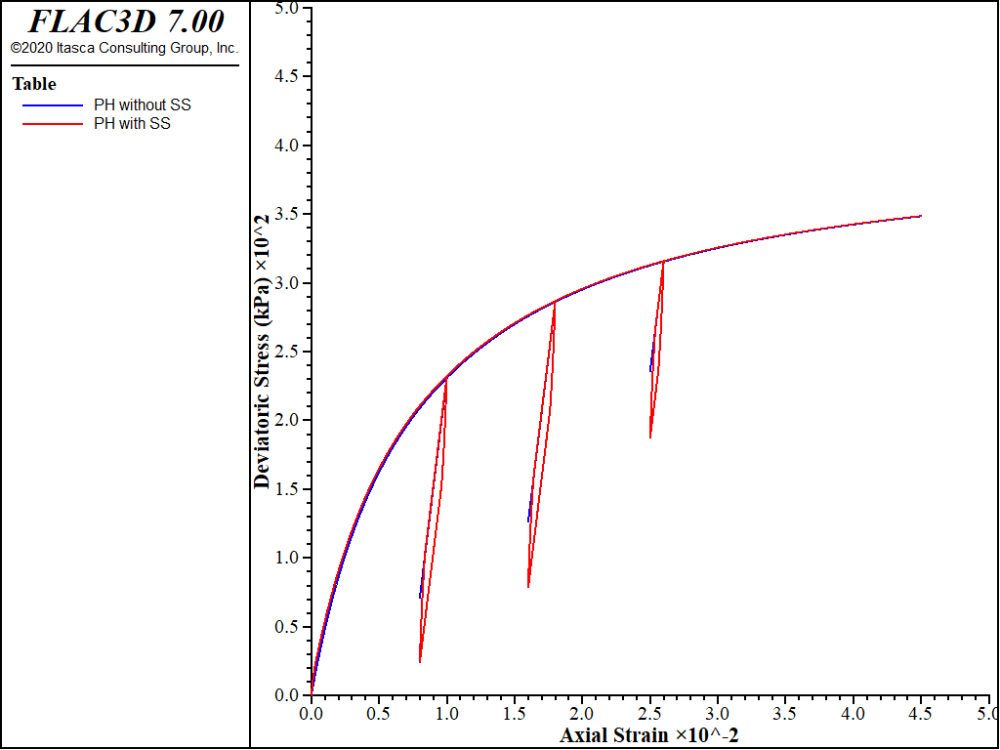
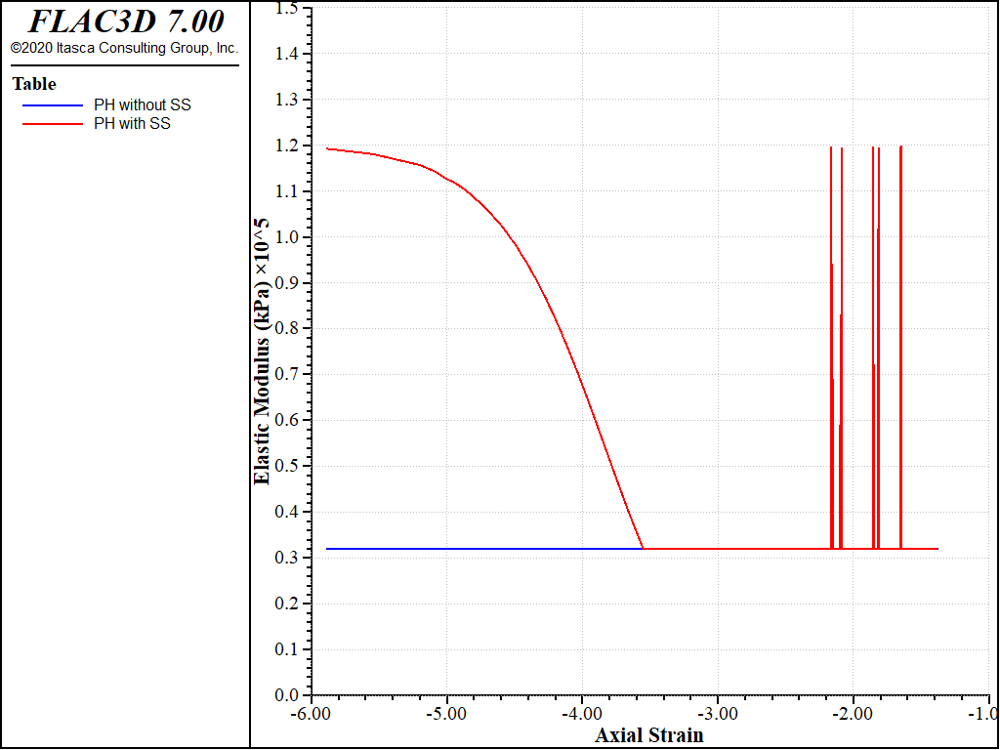

FLAC3D Theory and Background • Constitutive Models
不含和含小应变刚度的塑性硬化模型比较
注意
要在 FLAC3D 中查看此项目，请使用菜单命令 。 选择“ConstitutiveModels/ ComparisonSmallStrainPlasticHardening”并选择“ComparisonSmallStrainPlasticHardening.f3dprj”以加载。 该项目的主数据文件见本示例末尾（main data files）。
本示例比较了三轴压缩中不含和含小应变刚度的 塑性硬化（PH）模型（Plastic-Hardening (PH) model） 的行为。 两个模型都采用单网格单元三轴压缩试验，围压恒定为 100 kPa。 工况 1 为不含小应变刚度的标准 PH 模型， 工况 2 为含小应变刚度的 PH 模型。 参数列于表 1（Table 1）。
| 基本参数： | |
| \(\phi\) (degrees) | 30 |
| \(c\) (kPa) | 0 |
| \(\psi\) (degrees) | 10 |
| \(E^{ref}_{50}\) (kPa) | 3e4 |
| \(E^{ref}_{ur}\) (kPa) | 8e4 |
| \(\nu\) | 0.25 |
| \(m\) | 0.55 |
| \(p^{ref}\) (kPa) | 100 |
| 小应变参数： | |
| \(E^{ref}_{0}\) (kPa) | 3e5 |
| \(\gamma_{70}\) （默认值） | 2e-4 |
图 1（Figure 1）绘制了两个工况的偏应力与轴向应变关系。 两个工况的骨干加载路径总体相同。 区别在于卸载和再加载路径。 在工况 1 中，再加载路径正好是卸载路径的逆过程。 而在工况 2 中，卸载和再加载路径不同， 可以观察到明显的滞回环。
图 2（Figure 2）显示了两个工况的弹性剪切模量。 在工况 1 中，弹性剪切模量保持不变，其值为 \(G_{ur}\)， 而在工况 2 中，弹性剪切模量从初始值 \(G_{0}\) 降低到 \(G_{ur}\)， 然后如预期保持 \(G_{ur}\) 的数值。


图 1：不含和含小应变刚度时偏应力的比较。


图 2：不含和含小应变刚度时弹性模量的比较。
数据文件
TriaxialCompressionSmallStrainPlasticHardening.dat
model new
model large-strain off
zone create brick size 1 1 1
zone cmodel assign plastic-hardening
zone property stiffness-50-reference=3.0e4 stiffness-ur-reference=8.0e4
zone property pressure-reference=100.0 exponent=0.55 poisson=0.25
zone property coefficient-normally-consolidation=0.40
zone property friction=40.0 dilation=10.0 cohesion=0.0
zone property stress-1-effective=-100.0 stress-2-effective=-100.0 ...
stress-3-effective=-100.0
zone property flag-smallstrain=true stiffness-0-reference=30.0e4 ...
strain-70=2e-4
;
zone gridpoint fix velocity-z
zone face apply stress-xx=-100.0 range union position-x 0 position-x 1
zone face apply stress-yy=-100.0 range union position-y 0 position-y 1
zone initialize stress xx -100.0 yy -100.0 zz -100.0
;
[global zp_ = zone.head]
[global gp_ = gp.find(8)]
fish define hhhq_
global hhhq_ = zone.stress.xx(zp_) - zone.stress.zz(zp_)
global hhha_ = -gp.disp.z(gp_)
global G_ = zone.prop(zp_,'shear')
global strain_ = zone.strain.shear.inc(zp_)
end
history interval 5
fish history hhhq_
fish history hhha_
fish history G_
fish history strain_
;
zone gridpoint initialize velocity-z -4e-7 range position-z 1
model step 25000
zone gridpoint initialize velocity-z 4e-7 range position-z 1
model step 5000
zone gridpoint initialize velocity-z -4e-7 range position-z 1
model step 25000
zone gridpoint initialize velocity-z 4e-7 range position-z 1
model step 5000
zone gridpoint initialize velocity-z -4e-7 range position-z 1
model step 25000
zone gridpoint initialize velocity-z 2e-7 range position-z 1
model step 5000
zone gridpoint initialize velocity-z -4e-7 range position-z 1
model step 50000
;
hist export '1' vs '2' table 'phs_qs_100'
table 'phs_qs_100' export 'phs_qs_100' truncate
hist export '3' vs '4' table 'phs_Gs_100'
table 'phs_Gs_100' export 'phs_Gs_100' truncate
;
model save 'phs_w100'
⇐ Comparison between Mohr-Coulomb Model and Plastic-Hardening model | Isotropic Compression Test with Plastic-Hardening Model ⇒
| 这些内容对您有帮助吗？… | FLAC3D © 2019, Itasca | 原文更新于 2020 年 10 月 8 日 |